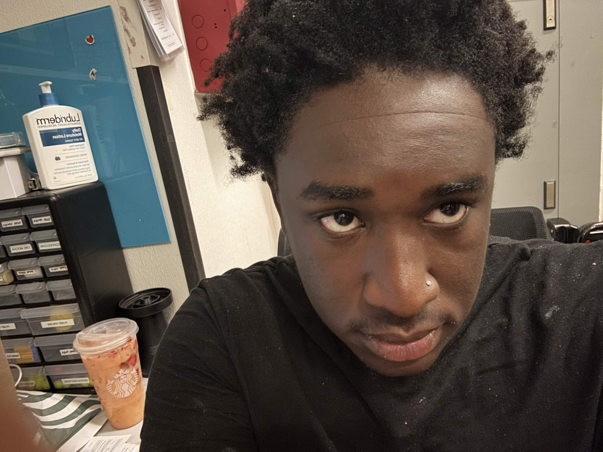

Welcome to My Personal Home Page

About Me
My name is Cameron Jones, and I am a Computer Science student at the University of North Carolina at Charlotte. I enjoy learning about technology, software development, and the ways computers can be used to solve real-world problems.
Outside of academics, I enjoy music, staying active, and being involved in different communities. I have experience performing in marching bands and participating in Ultimate Frisbee, and I enjoy working with other people toward a shared goal.
My goal is to continue developing my technical and professional skills while building projects that give me practical experience in computer science and software development.
What I Am Interested In
- Software development
- Web development
- Computer networking
- Cybersecurity
- Problem solving
- Music and performance
My Education
I am currently studying Computer Science at UNC Charlotte. My education has given me opportunities to work with programming, databases, networking, software engineering, and web technologies.
Course Website
For my coursework and web-development projects, visit my ITIS3135 course site.